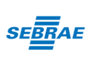

<!--
  Generated template for the Page5Page page.

  See http://ionicframework.com/docs/components/#navigation for more info on
  Ionic pages and navigation.
-->
<ion-header>

  <ion-navbar color="primary">
    <ion-title>
      
        <p style="font-size: 20px; color: white; text-align: center">
      Apoiadores
    </p>
    </ion-title>
    <ion-buttons left>
      <button ion-button icon-only (click)="goBack()">
        <ion-icon name="arrow-back"></ion-icon>
      </button>
    </ion-buttons>
  </ion-navbar>

</ion-header>


<ion-content padding>

<br><br><br><br><br>
    <div class="row responsive-sm">
        <div class="col">
          
      </div>
    
        <div class="col">
        
        </div>
    </div>


    <div class="row responsive-sm">
        <div class="col">
          
      </div>
    
        <div class="col">
        
        </div>
    </div>


</ion-content>
